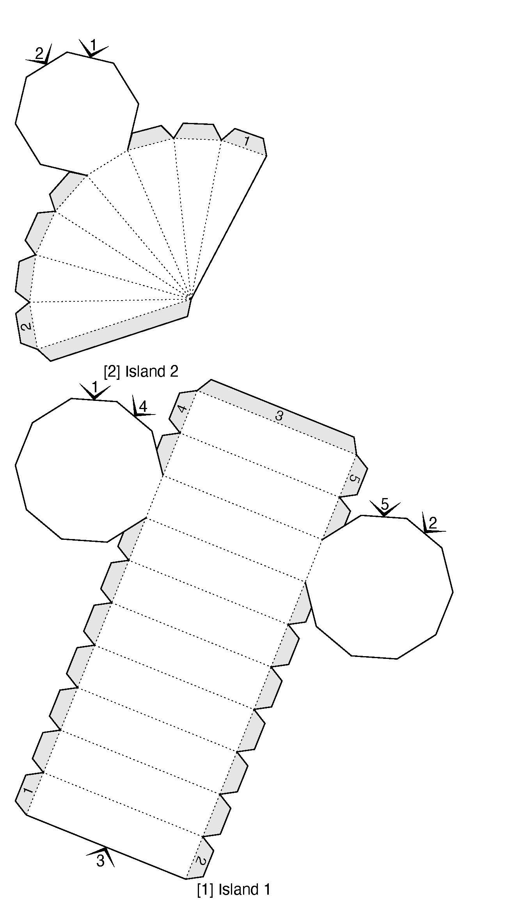

Unwrap

Cone and cylinder unwrapped

Final topview

Side view of model

Front view
Possible Uses:
- A handheld watering can
- If you were to make some slight changes in the inner working of the cylinder, you could make it a cheese grater, with the cilinder working to funnel out the grated cheese.
- You could fill the rectangle with a soap like substance, you could blow through the cylinder to create bubbles from the cone.
- A handheld projector, with the right internal components, you could turn this into a way to make a portable projector, capable of projecting pictures on the go, perfect for imprompu presentations.
- A spray bottle cap, with adjustments allowing it to screw onto a watterbottle, a straw going to the bottom and a trigger it could be used for cleaning among other uses.
- A childrens toy, possibly in the form of an old fashinoned camera.
- Wall-mounted security camera.
- A hair drier, with extra room for components, it could be a high powered device.
- A gas despenser, with heliem or something similar it could be perfect for blowing up balloons for a party.
- If you placed a rotateable ball in the end of the cone, it could work as a massage gun as a convienient way to gently work out tightness in muscles.